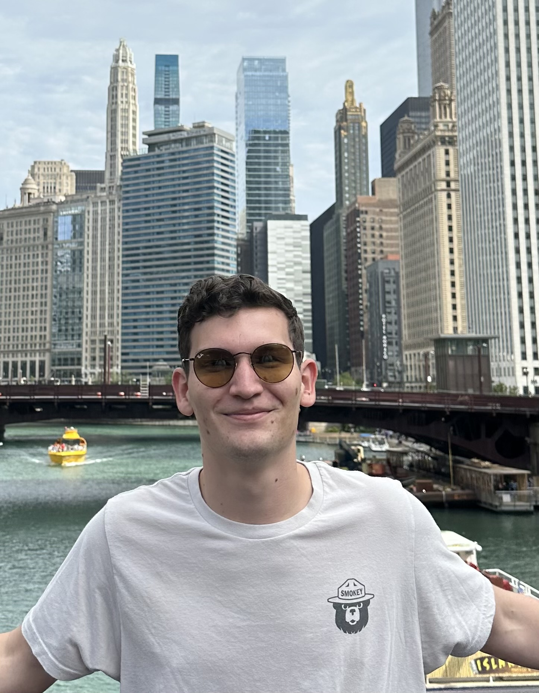

About Me


I'm a UX/UI Designer with a wide variety of skills and experience. I'm passionate about creating user-friendly, intuitive designs that help clients and users achieve their goals efficiently. While design is my primary focus, I am also a competent front-end developer. Originally from Connecticut, I now live in Washington, D.C. with my cat, Stevie, and work remotely for clients all over the world. I'd love to help you bring your dream website or app to life.
Some hobbies include hiking, running, golf, learning about history, and watching sports. The background photos throughout the site are from a few of my favorite hikes!